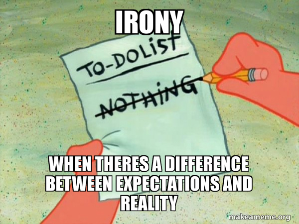
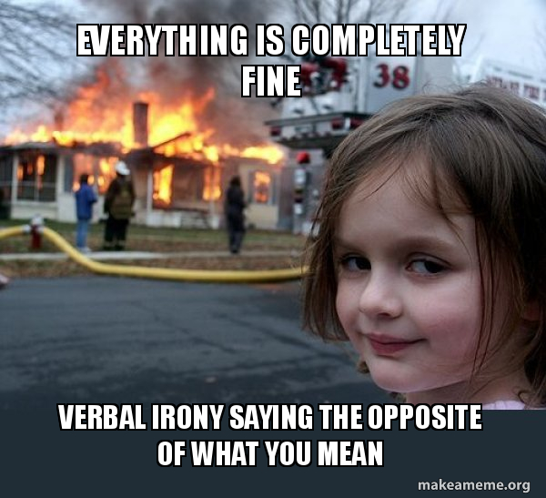
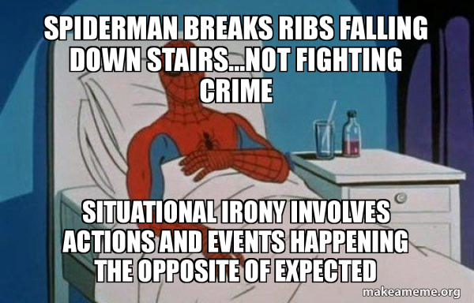
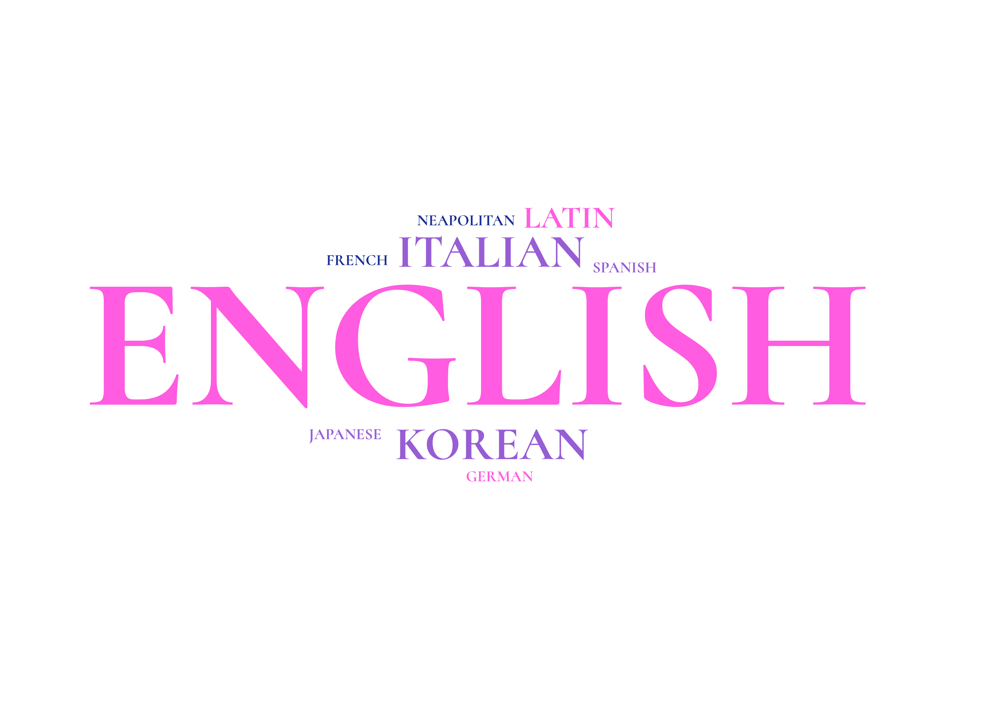

How can irony be defined? It is the art of saying something while meaning its
opposite — a delicate balance between appearance and reality. But
irony is also a
deeply creative act: it relies on
imagination, interpretation, and shared
understanding between the ironist and the observer. This ontology aims
to map that
creative tension, revealing how irony emerges, evolves, and connects minds through
layers of meaning.
This project was developed for the course Knowledge
Organisation and Extraction by Aldo
Gangemi at
Alma Mater Studiorum – University of Bologna, within the Master’s Degree in Digital
Humanities and
Digital Knowledge. It focuses on irony within lyrical
works, exploring how irony can be understood as a
creative event emerging from the tacit agreement
between the ironist and the interpreter. Through
this lens, creativity is not seen as an isolated act of invention, but as a dynamic process of
shared understanding — where meaning arises from
interaction, context, and the subtle interplay of
knowledge, interpretation, and intent.
We chose irony as the focus of our project because it is a complex, elusive, and deeply
relational concept. What makes it especially intriguing is its inherent duality, the
constant coexistence and tension between two layers of meaning: appearance and
reality, the
literal and the implied. This friction between what is said and what is meant is what we call
clash, which becomes a fertile ground for creativity.
Building an ontology about irony in lyrical works allowed us to make this
dual structure visible, as their
concise form offers an ideal ground for showing clearly such delicate balance.
In our view, irony is a form of creativity in which both the ironist and the
observer
participate as co-creators. Irony is not a solitary act but a shared artistic process:
its meaning emerges only through the interplay between the one who produces it and the one who
perceives it. The ironist shapes the ambiguity, but it is the observer that completes the act by
recognizing the clash and finally interpreting it. Without a silent agreement between the
two
parts, irony wouldn't be possible. This
collaborative creation is precisely what makes irony
fascinating to represent within an ontology: it is an attempt to map not only the structure of
meanings, but also their dynamic relationship that brings creativity to life.

The Art of the Ironist: Perspectives
Irony is notoriously difficult to define, as it is marked by a strong degree of subjectivity.
Attempts to confine such a broad concept within a structured framework have been numerous, and
the challenge is particularly acute in literature, where multiple forms of
irony have already been contextualized and analyzed by scholars in relation to different
authors.
In order to define and abstract the concept of irony, we reviewed various academic resources
focusing in on two closely related works: D. C. Muecke’s The
Compass of Irony and Inés
Lozano-Palacio’s dissertation A Scenario-Based Approach
to Irony. Structure, meaning and
function, which itself draws heavily on Muecke’s framework. Both Muecke and Palacio approaches
irony in a structured and general way, unlike many other studies that focus on specific types of
irony — such as Socratic or Byronic irony — which tend to be more descriptive, practical, but
less conceptually coherent (for example, texts labeled as “Socratic” may not be written by
Socrates
himself, so it would first be necessary to clearly define what actually constitutes “Socratic
irony” — and what does not.) For this reason, we sought a more general and abstract
approach, capable of capturing the underlying mechanisms of irony rather than its manifestations
in particular styles or authors.
To build the conceptual framework of our ontology, we relied on Muecke’s analytical model
of irony, which provided a structured foundation for abstracting and classifying the phenomenon.
As Muecke notes, irony, like beauty, is in the eye of the beholder — it
depends on an ironist that creates the premises for an ironic event to happen, and
an observer who is capable of perceiving the ironist's intentions behind their words.
An ironist, therefore, is not just like an artist, but is an artist, governed by
the
artist's need for perfection of form and expression and all 'the nameless graces which
no
methods teach'. The art of the ironist is most like the arts of the wit and the
raconteur
[...] And to have a sense of irony, to be able to see the ironic potential of a
situation or
state of affairs, is to have, among other qualities, something analogous to the artist's
ability
to see what would make a good picture or the writer's ability to see how an event could
be
turned into a good story.
(D.C. Muecke, The Compass of Irony, p. 15)
At the core of his framework lies the principle of duality, or “double exposure”,
between two levels of meaning:
Level 1 (Appearance): the literal meaning, the immediate perception, or the surface
intention of the ironist, which pretends to believe in what he is saying.
Level 2 (Reality): the hidden, deeper, or superior understanding of the situation —
usually shared by the ironist and the observer (if able to perceive it).
The presence of both levels is essential: irony does not correct falsehood but exposes two
realities simultaneously.
Muecke’s classification distinguishes two main forms of irony based on their origin:
Verbal Irony: a figure of speech in which the intended meaning contrasts with the
literal one. It implies an ironist who deliberately constructs this opposition.
Situational Irony: when the outcome of events contradicts expectations or intentions,
producing a figurative sense of incongruity.
He further refines verbal irony through four modes, depending on the ironist’s
relationship with their own irony:
Impersonal Irony: The irony lies in what is said rather than in who says it; the
ironist’s personality remains hidden behind the words.
Self-disparaging Irony: The ironist adopts a feigned persona (often naive or
ignorant) to mask their real opinion and highlight contrast through self-mockery.
Ingénu Irony (Irony of the Naïf): A naive or innocent narrator exposes societal
contradictions through literal and unfiltered observations; the victim is often society
itself.
Dramatized Irony: The ironist disappears almost completely behind the narrative
world, allowing irony to emerge from the structure itself, through contradictions embedded
in the story.
In addition, Muecke identifies five types of situational irony, based on the nature of the
contradiction involved:
Irony of Simple Incongruity: Arises from the juxtaposition of parallel incidents or a
striking, self-evident incongruity.
Irony of Events: When an outcome is contrary to what was intended or expected (e.g.,
Oedipus ensuring his fate by trying to escape it).
Dramatic Irony: When the audience knows something the characters do not, creating a
gap in awareness.
Irony of Self-betrayal: When an individual’s actions aimed at a goal unintentionally
destroy or contradict that goal.
Irony of Dilemma (Double Irony): A complex form in which equally valid or invalid
terms oppose each other, leaving no superior “reality level” to resolve the tension; it
often manifests as paradox or moral ambiguity.
Muecke’s structured typology provided the hierarchical and relational foundation of
different kinds of irony within our
ontology. The two-level structure at its core,appearance versus reality, is
further developed and refined through the framework proposed by Palacio, which
deepens the relational and cognitive aspects of irony.
Much like Muecke, Palacio aims to find the underlying construction and essence of irony. She
uncovers this by performing a meta-analysis from a variety of creative mediums such as
literature, television and movies. By extracting examples of irony from a wide array of
real-world examples (as opposed to made-up instances), Palacio manages to piece together common
patterns in order to extract a generalised structure of irony.
Palacio explains how irony is the product of a clash between an epistemicscenario created by an ironist and an observablescenario perceived
by an interpreter.
Epistemic Scenario - The expectation held about a certain set of circumstances.
Observable Scenario - What is actually happening in an observed set of circumstances.
Palacio goes into more detail of these scenarios in verbal irony, further breaking down the
construction of a verbal epistemic scenario into pretended agreement, ironic markers and
echo-building (repeating something related to the pretended agreement).
But what we can see from the most general definition of irony, is the parallel to Muecke’s
principle of duality with the epistemic as the appearance and the observable as the
reality. Palacio builds upon this by highlighting the importance of the “clash” between these
two ideas as the place where irony is actually born. As she explains, “there is no ironic
meaning until an interpreter, or a perceiver, detects a clash between two scenarios”
(Lozano Palacio, 2020, p. 93). This not only emphasises the communicative nature of irony
but also highlights how the interpreter perceives the clash is another fundamental part to the
construction of irony.
Follow on from this, Palacio introduces a third element of irony, the target, or rather the
object of the ironic instance. The target can vary from the actors involved in the irony, to a
political ideology. For this she identifies four broad target types, a person, a state of
affairs, an institution or any animate or inanimate object. For our ontology we extended
this to seven types, a community, a concept, an institution, a person, the self, a state of
affairs or a thing.
Placing these perspectives into the context of our ontology, we modeled irony as the product
of an event involving an epistemic scenario and an observable scenario which clash with
each other. This event is created by an ironist, and perceived by an interpreter.
The ironic instance is then targeted at a particular idea. By placing irony as the
product of an event we can reveal both its social context and communicative nature.
We also wanted to extend these reflections on irony by also highlighting the instances which are
created when there is no clash between an epistemic and observable scenario. We have defined
these instances as sincerity.
Summary in Memes


Ironic Creativity
Now that we have a structured understanding of irony (and sincerity when there is no clash), we
can take a look at its creative nature.
In Analysis of Creativity, Mel Rhodes highlights three key qualities of creativity and
original ideas:
A human mind grasping the elements of a subject
Reflection on the parts of the subject, their relationship to each
other and to the whole
A sustained effort in embodying or articulating the idea effectively
These three points reflect the elements needed to make irony successful. On the part of the
ironist, before attempting irony, they need to be aware of the common knowledge between
themselves and the interpreter, to play with the expectations which arise from that
knowledge, because as Palacio and Muecke point out, irony can only come about when the clash
between the expectation and reality has been perceived by an interpreter.
Rhodes continues to synthesise the essence of creativity by introducing four elements he refers
to as the 4Ps of creativity - Person, Process, Press, Product.
Person
This refers to all the personal traits that influence a person’s creativity, such as,
personality, intellect, value systems, etc. Another aspect of the creative person which Rhodes
highlights is “the ability to be puzzled…[and] the ability to accept conflict and
tension” (Rhodes, 1961, p. 4). Here we see the qualities of the actors of irony
highlighted, particularly that of the interpreter, who is the final actor in this
creative process, perceiving a conflict between the epistemic and the observable and
therefore fulfilling the ironic idea put forth by the ironist.
Process
Process refers to any act involved in creativity, from thinking and learning to
implementing. A key aspect which Rhodes highlights here is that of the process of
communicating which aligns with the third key quality of creativity he outlines in the
beginning. Creativity is not just a solitary process within the mind of a single creative
person, it is rather a manifestation of the interaction and communication between actors and
environments. This is particularly true for irony which required both the production
of the idea from the ironist as well as the acknowledgement and perception of the
idea from the interpreter.
Press
Rhodes uses press to refer to “the relationship between human beings and their
environment" (Rhodes, 1961, p. 5). This brings to mind the target or object of an ironic
remark. Although the word target may suggest it comes at the end of the ironic process once the
irony has been made and perceived, the target actually represents the whole social context in
which the irony was created, placing it both at the beginning and end of the ironic
process. Like Rhodes explains, “each idea that emerges reflects uniquely upon the
originator's self, his sensory equipment, his mentality, his value systems, and his
conditioning to the everyday experiences of life” (Rhodes, 1961, p. 5). In the ironic
process this extends to making sure that the experiences and value systems of the ironist also
somewhat overlap with that of the interpreter.
Product
A product is an idea embodied into a tangible form where “idea refers to a thought
which has been communicated to other people in the form of words, paint, clay, metal, stone,
fabric, or other material” (Rhodes, 1961, p. 6). In our context the product is the
creative work, or more specifically the lyrical work, in which we have found instances of
creative ideas in the form of irony and sincerity. By using lyrical works such as poems and
songs which are typically shorter than prose and literature, we can study complete works and
look at how multiple creative ideas (ironic and sincere) can make up a whole creative product.
cover:CreativeIdea –> creon:CreativeIdea - it is typically defined as a
novel or divergent concept or thought that arises in the mind of an individual and can
be communicated to others.
cover:CreativeWork –> creon:CreativeProduct- It is something that is
produced as a result of the creative process, by a specific Person.
cover:CreativeEvent -> creon:CreativitySituation - Any situation that
involves creative processes, ideas, products, persons, contexts, etc.
Examples of Irony
In our dataset, we included not only poems in the strict sense but also song lyrics (cover:Poem
and cover:Song), as irony tends to appear more frequently in the latter. Consequently, the
interpreter of potential irony can belong to one of two categories: Reader or Listener. In the
case of songs, the performer is not necessarily the author and therefore not always the ironist
in the situation. Some instances are not in English and thus include both the original text and
its English translation.
Within these instances, we identified both ironic and non-ironic expressions, in order to
highlight the distinction between the two and to further emphasize the presence of irony when it
occurs. An instance is classified as ironic when it displays a duality of meaning—that is, when
the Epistemic and Observable scenarios diverge (in practical terms, when the literals, or
strings in the dataset, do not align). Conversely, when such a divergence does not occur (when
there is no “clash” between what the ironist states and what the observer perceives), the
instance is considered sincere, as the absence of this clash indicates that no irony is involved
and that the author’s utterance corresponds to their genuine intent.
Diversity of the Instances: Language and Target Wordclouds

Dataset
ControVerse Ontology
The ontology visualized with OntoGraf in Protégé. The image itself can be found here along with a more readable version here.
The following section presents the Classes, Object Properties, and Data
Properties used in our ontology, which together define the conceptual and relational
structure of irony in lyrical works. We also aligned our ontology with Creon, "an integrated ontology of creativity
theories".
A lyrical work’s instance contains an Ironic Event (that could be listened or read) when
there is a clash between two other Events (epistemic scenario and observable scenario),
has an Author (which, in that case, will be called Ironist) and an Interpreter as
Actors, has
some specific Targets, and produces an Irony Type (verbal or situational and their
subtypes).
If the Clash between the two scenarios is not present, the Event produced is Sincere,
therefore Irony does not arise.
Classes, Subclasses and Individuals
Classes
CreativeIdea – Abstract intellectual or artistic concept, such as irony or
sincerity.
CreativeWork – Any artistic or literary product resulting from a creative
process.
LyricalWork – Subclass of CreativeWork representing poetic or musical
compositions.
Song – A lyrical work with a musical structure and performance component.
Poem – A lyrical work composed of verses and often characterized by rhythm and
imagery.
Actor – Any entity (person or group) involved in a creative or interpretative
process.
Author – The creator of a lyrical or literary work.
Ironist – A specific type of author who intentionally employs irony.
Interpreter – The agent who perceives and interprets the ironic meaning.
Performer – The individual or group that presents or enacts a lyrical work.
Target – The entity, concept, or individual toward which irony is directed.
Event – A general occurrence or situation that can be analyzed within an ironic
framework.
CreativeEvent – A specific event involving the creation or expression of an
artistic idea.
IronicEvent – A creative event characterized by the coexistence of contrasting
meanings.
SincereEvent – A creative event lacking the duality typical of irony.
Irony – The central concept, defined by the tension between appearance and
reality.
Sincerity – The opposite conceptual pole of irony, marked by unity of expression
and meaning.
VerbalIrony – Irony expressed through language and deliberate wording.
SituationalIrony – Irony arising from events or circumstances that contradict
expectations.
Subclasses
Song ⊆ LyricalWork
Poem ⊆ LyricalWork
Author ⊆ Actor
Ironist ⊆ Author
Interpreter ⊆ Actor
Performer ⊆ Actor
CreativeEvent ⊆ Event
IronicEvent ⊆ CreativeEvent
SincereEvent ⊆ CreativeEvent
VerbalIrony ⊆ Irony
SituationalIrony ⊆ Irony
Irony ⊆ CreativeIdea
Sincerity ⊆ CreativeIdea
Individuals
Reader, Listener – Actors who interpret or experience the creative idea
within a lyrical work.
ListeningEvent, ReadingEvent – Specific acts of reception tied to
interpretation.
IronyOfSimpleIncongruency, IronyOfEvents, IronyOfDrama,
IronyOfSelfBetrayal, IronyOfDilemma – Situational irony types derived from
Muecke reflecting
different narrative or contextual contrasts.
Institution, Community, Person, Self, Concept,
Thing, StateOfAffair – Abstract entities which can be the target (object)
of a creative idea (irony or sincerity).
Object Properties
hasScenario – Connects an event or work to its related scenario.
hasEpistemicScenario – Links an ironic event to the interpretative (mental)
context.
hasObservableScenario – Links to the perceivable external context.
hasActor – Associates an event with the involved agent.
hasTarget – Indicates the object or entity toward which irony is directed.
hasReceptionEvent – Connects a creative event to the act of reception it was
created during.
createdFrom – Connects a creative idea to the creative event it was produced
from.
hasIronyType – Identifies the verbal or situational irony type of a creative
idea.
interpretedBy – Links an event or work to the interpreting agent.
initiatedBy – Links the ironic act or work to its creator.
hasCreator – General property connecting a creative work with its author.
hasPerformer – Connects a lyrical work (especially a song) to its performer.
embodiedBy – Indicates the context or source where the irony is manifested.
Data Properties
hasCreationDate – Specifies when the work or event was created.
hasTitle – Provides the title of a creative work.
hasEventLocation – Indicates the location of an event.
hasCreationLocation – Defines the place where a work originated.
hasDescription – Gives a textual description of the entity.
hasLanguage – Specifies the linguistic medium of the work.
hasPoeticForm – Defines the poetic structure (e.g., sonnet, ode).
hasGenre – Classifies the lyrical work within a literary or musical genre.
hasName – Indicates the name of an actor or entity.
hasTargetDescription – Describes the target of irony in more detail.
Querying the Ontology
Querying the ontology represents the final step in understanding how our model works in practice.
By using SPARQL, we can explore the relationships between concepts and individuals,
verify connections between authors, works, and events, and test how irony emerges through
different contexts. This process transforms the ontology from a simple conceptual map into an
interactive knowledge system — a space where data can be questioned, interpreted, and connected
in new and creative ways, much like the dynamics of irony itself.
The aim of this project was to develop an ontology capable of capturing how irony operates and is
constructed within a literary context, a fertile ground where authors can creatively convey
meaning without stating it directly, leaving layers of interpretation for the reader to uncover.
Irony, in this sense, exists in the tension between what is said and what is meant, a duality
that our ontology was designed to represent. This tension forms the core distinction between
ironic and non-ironic instances, reflecting the interplay between the Epistemic and the
Observable Scenario.
In designing our ontology, we ensured that the outcomes of our queries would align with the
theoretical frameworks proposed by Muecke and Palacio, as well as established structures of
irony. Instances were categorized as either Ironic or Sincere, enabling the ontology to identify
and differentiate ironic from non-ironic expressions. This approach allows for a systematic
exploration of irony within literary texts, highlighting both explicit and subtle forms.
Moreover, the dataset can be further expanded with additional examples to make these distinctions
more explicit and robust, improving the ontology’s coverage and applicability. Future work could
also explore the integration of context-sensitive features or pragmatic cues, enhancing the
system’s ability to model the nuanced mechanisms through which irony is conveyed and
interpreted.
Hutcheon, Linda. “The Complex Functions of Irony.” Revista Canadiense de Estudios Hispánicos 16,
no. 2 (1992): 219–34. http://www.jstor.org/stable/27762900